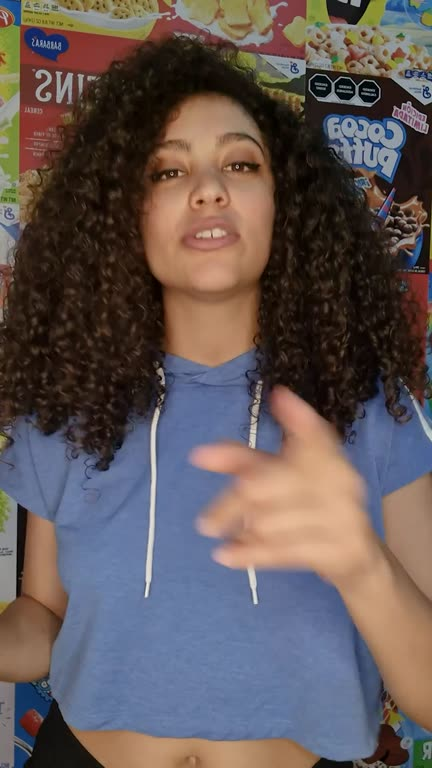
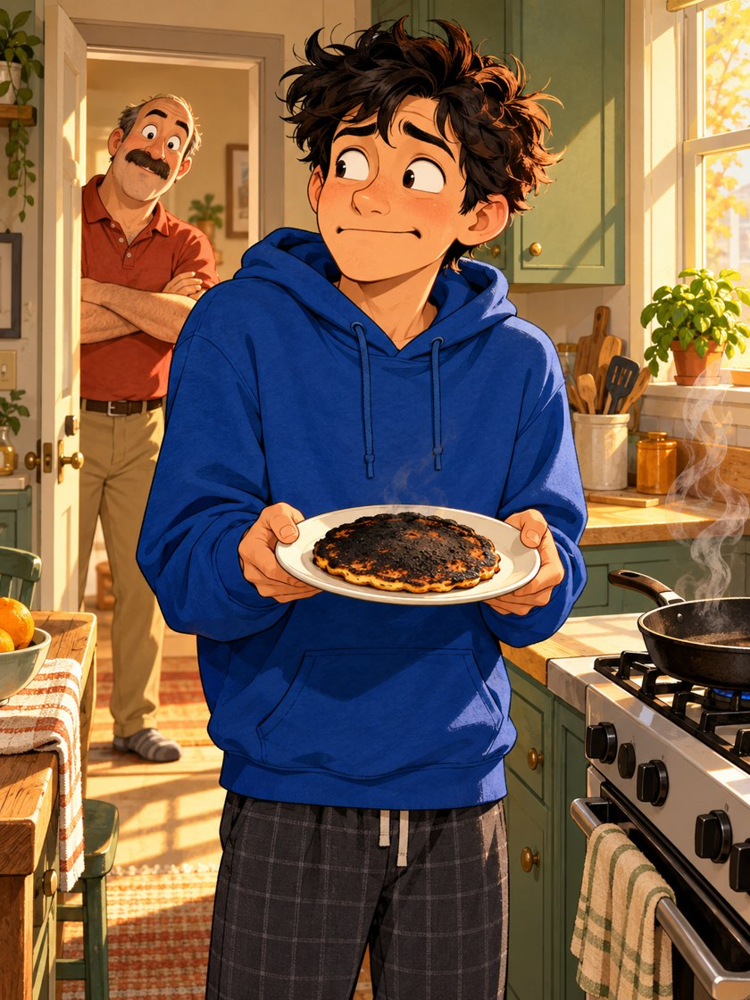
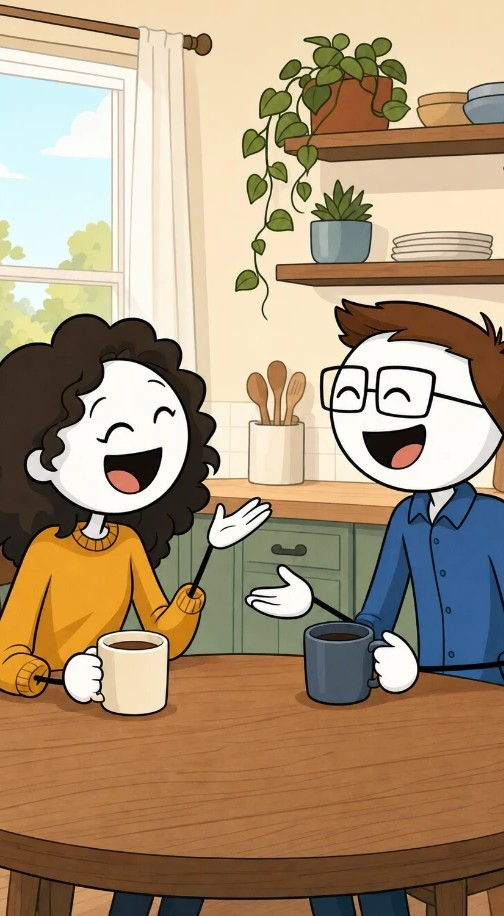

Tell your story
Start with a video of you. We'll find the words and the moments that matter.
Turn your talking video into a story people can see. Illustrated scenes, a consistent cast, and captions with personality. Your face and voice stay at the heart of it.

Fictional story · licensed stock footage · original artwork
Find your visual language
The finishing touches are yours
From a phone video to your next post. You get the final say at every step.
Start with a video of you. We'll find the words and the moments that matter.
Choose an art style, or describe a world that's entirely your own.
Give every character the right look. Approve the cast before we draw the scenes.
Fine-tune your shots, add music and captions, then export a video ready to share.

The story behind the storytime.The awkward moment. The unexpected guest. That look on your dad's face. Show the details a talking-head video can't, then make the final cut your own.
Choose a video of you telling your story. A 30-second to 5-minute phone video works well.
Pick a visual world for your story. The same look follows your characters through every scene.

Simple characters. Big personality.
One consistent cast, in every sceneUse the arrow keys or jump straight to a style.
Recommended settings are ready. Choose where you'll post and how much of you to show, or just continue. The example updates as you go.
Give us the words. We'll find the people, places and moments that bring them to life.
Choose what works for you. You'll approve the characters before we draw your scenes.
A few details help characters look right the first time and save redraws.
Add anyone whose name or appearance you want us to get right. People and pets are welcome.
Review your characters before we draw the scenes.
Scrub the timeline, tap any clip to change it, add sound effects, then export.
Tap a clip on the timeline.
Mix
Music
Sound effects
Tap to add at the playheadCaptions
Drag the caption on the video to move it.
Font
Size
Position
Words on screen
Text
Highlight (the word being said)
Outline
Background
Animation
Effect
Select a word to correct it. Your voice and video stay in place.
No matching words.
Filter
Camera
Choose a format, then save the finished video to your device.
Format
Export plays your video once in real time while it records, with music and sound effects. Keep this tab open until it finishes.
Our planned subscriptions cover AI creation, character consistency, captions and editing within your plan's allowance. Paid plans aren't open yet. Explore the sample editor for free.
Every plan includes all AI drawing, quality checks and exports. Subscriptions open soon. Manage subscription
No. Your video is played and edited inside your browser. Only the words you say are sent to the AI editor, and only the scene descriptions (plus your character designs) are sent to the image model.
StoryCuts is a monthly subscription with everything included: planning, every character and scene picture, quality checks and exports. You don't need any other accounts. Plans are based on minutes of finished video each month, starting at $19. Subscriptions open soon. Until then, the sample editor is free and needs no account.
Paid plans aren't open yet. When they launch, you'll be able to cancel or switch plans and keep access until the end of your paid period.
Yes, that's the point. Each character is designed once, you approve the look, and every scene is drawn with those designs as reference. Every image is also checked automatically and redrawn if a character doesn't match.
Export vertical 9:16 for TikTok, Instagram Reels and YouTube Shorts, or horizontal 16:9 for YouTube, with captions burned in.